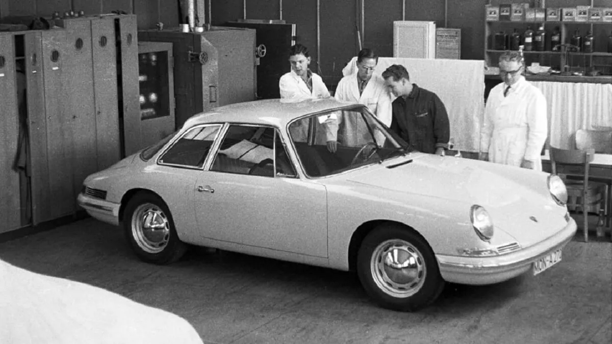
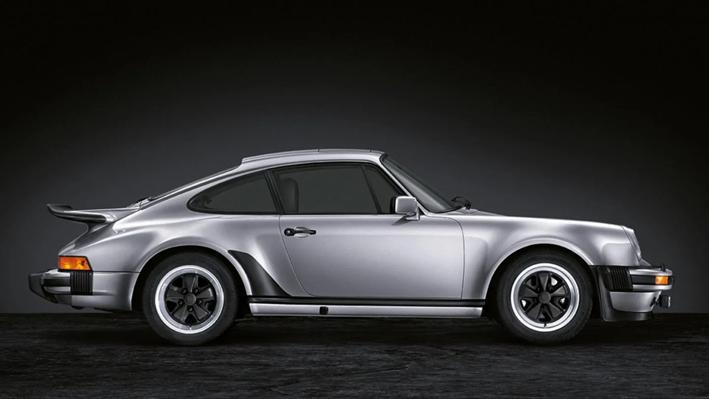
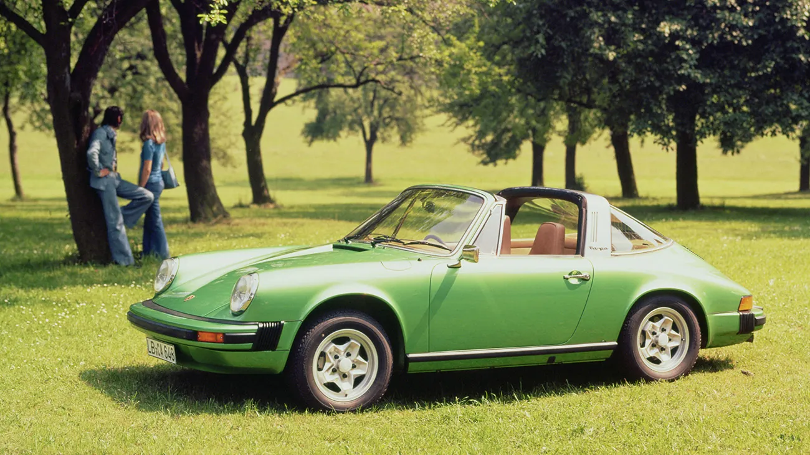
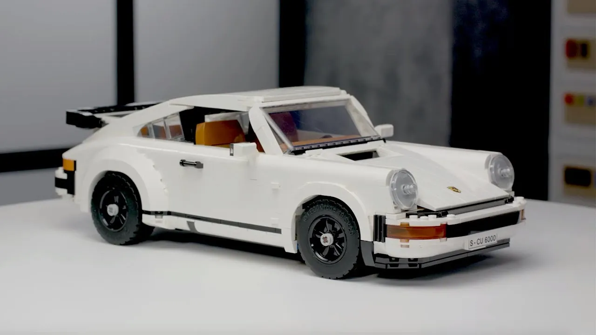

El Porsche 911The Porsche 911
Cuando el Porsche 911 se presentó en el Salón de Fráncfort de 1963, enseguida se reconoció como un triunfo del diseño y de la ingeniería. Seis décadas y ocho generaciones después, el concepto sigue vigente y el 911 continúa siendo uno de los deportivos más icónicos de todos los tiempos.
When the Porsche 911 was first introduced at the 1963 Frankfurt Motor Show, it was quickly recognised as a triumph of both design and engineering. Six decades and eight generations later, the concept still endures and the 911 remains one of the most iconic sports cars of all time.
El TurboThe Turbo

El Porsche 911 Turbo, presentado en 1975, revolucionó el mundo de los deportivos. Construido sobre las bases del 911 original de 1963, fue el paso decidido de Porsche hacia las altas prestaciones. Conocido internamente como 930, el Turbo fue el 911 más rápido y potente de su época, y combinaba potencia bruta con uso diario: una fórmula que ha perdurado hasta hoy.
The Porsche 911 Turbo, first introduced in 1975, revolutionized the world of sports cars. Built upon the foundations laid by the original 1963 911, it was Porsche's bold step into high-performance territory. Known internally as the 930, the Turbo was the fastest and most powerful 911 of its time, combining raw power with everyday usability — a formula that has endured to this day.
Diseño e identidadDesign and Identity
El 911 Turbo estrenó aletas traseras más anchas, llantas más grandes y el icónico alerón trasero «cola de ballena», que se convirtió en sinónimo de prestaciones. Su aspecto musculoso no era solo estético: cumplía funciones aerodinámicas y de refrigeración esenciales para el motor turboalimentado. Con su silueta inconfundible, el 911 Turbo se convirtió en un símbolo del exceso y del talento técnico de los años setenta.
The 911 Turbo featured wider rear fenders, larger wheels, and an iconic "whale tail" rear spoiler that became synonymous with performance. Its muscular look was not just cosmetic — it served aerodynamic and cooling functions essential for the turbocharged engine. With its instantly recognizable silhouette, the 911 Turbo became a symbol of 70s excess and engineering prowess.
Potencia turboTurbocharged Power
El motor original de seis cilindros bóxer y 3,0 litros, con un solo turbo, rendía 260 CV, que pasaron a 300 CV con la versión de 3,3 litros de 1978. La aceleración era brutal y emocionante, con fama de entregar la potencia de golpe por el llamado «turbo lag». Pese a su carácter salvaje, el Turbo consolidó la reputación de Porsche de combinar lujo, precisión y pura emoción al volante.
The original 3.0-liter flat-six engine with a single turbocharger produced 260 horsepower, later increased to 300 hp in the 3.3-liter version from 1978. Acceleration was brutal and thrilling, with a reputation for sudden bursts of speed known as "turbo lag." Despite its wild nature, the Turbo cemented Porsche's reputation for combining luxury, precision, and pure driving excitement.
Legado e influenciaLegacy and Influence
El 911 Turbo sentó las bases de décadas de variantes de altas prestaciones del 911. Definió lo que debía ser un deportivo turboalimentado: rápido, bonito y un poco intimidante. Hoy es uno de los Porsche clásicos más buscados, admirado tanto por su complejidad mecánica como por su diseño icónico.
The 911 Turbo laid the foundation for decades of high-performance 911 variants. It defined what a turbocharged sports car should be: fast, beautiful, and slightly intimidating. Today, it is one of the most sought-after classic Porsches, admired for both its mechanical complexity and iconic design.
El TargaThe Targa

Presentado en 1965 como alternativa a los descapotables, el Porsche 911 Targa respondía a las normas de seguridad que se avecinaban en Estados Unidos. Su diseño incluía un panel de techo desmontable y un arco de seguridad fijo de acero inoxidable, que permitían circular a cielo abierto sin comprometer la rigidez estructural. Fue una solución ingeniosa que se convirtió al instante en un clásico del diseño.
Introduced in 1965 as an alternative to full convertibles, the Porsche 911 Targa was a response to looming safety regulations in the U.S. Its distinctive design featured a removable roof panel and a fixed stainless-steel roll bar, creating an open-top experience without compromising structural integrity. The Targa was a creative solution that became an instant design classic.
Elementos de diseño atemporalesTimeless Design Elements
El 911 Targa conservó las elegantes curvas del coupé y añadió una nueva versatilidad. Su luneta trasera envolvente, incorporada en versiones posteriores, mejoró la visibilidad y aportó un toque estilizado y futurista. Sin el techo, el conductor disfrutaba de la emoción de conducir al aire libre, mientras que el arco Targa le daba una identidad única entre los deportivos.
The 911 Targa kept the graceful curves of the coupe while offering a new kind of versatility. Its wraparound rear window, added in later versions, enhanced visibility and added a sleek, futuristic touch. With the roof removed, drivers enjoyed the exhilaration of open-air motoring, while the Targa bar gave the car a unique identity that stood out among sports cars.
Experiencia de conducciónDriving Experience
Gracias al mismo motor trasero y a la misma ingeniería de precisión que el coupé, el 911 Targa ofrecía un comportamiento dinámico y un tacto deportivo. Se sentía igual de cómodo en carreteras de montaña que en paseos por la costa, y transmitía una sensación de libertad en cada kilómetro. El Targa atraía a quienes querían un Porsche con prestaciones y, a la vez, un toque de elegancia.
Thanks to the same rear-engine layout and precision engineering as the coupe, the 911 Targa offered dynamic handling and a sporty feel. It was equally at home on winding mountain roads or coastal drives, delivering a sense of freedom with every kilometer. The Targa appealed to those who wanted a Porsche with both performance and a touch of elegance.
Un legado duraderoA Lasting Legacy
El concepto Targa ha perdurado en todas las generaciones del 911. Aunque los Targa modernos tienen techos automáticos y tecnología avanzada, los modelos originales de finales de los sesenta y de los setenta siguen siendo muy valorados por coleccionistas y puristas. El Targa demuestra la capacidad de Porsche para unir innovación y estilo atemporal.
The Targa concept has endured through every generation of the 911. While modern Targas now feature automated roof systems and advanced technology, the original models from the late 1960s and 70s remain highly prized by collectors and purists. The Targa stands as a testament to Porsche's ability to blend innovation with timeless style.
Del equipo de diseñoFrom the Design Team

Este modelo empezó como un proyecto personal. Como es lógico, me hace mucha ilusión que decidiéramos convertirlo en un set real de LEGO®. Empecé leyendo todo sobre las distintas versiones del Porsche 911 y reuní muchas imágenes del coche para trabajar. El gran reto fue diseñar el modelo para que se pudiera montar como Turbo o como Targa. Construimos cinco versiones distintas del coche hasta quedar contentos con el resultado. Estoy especialmente orgulloso de lo bien que capturamos la «cara» de este coche: el paragolpes delantero, los faros inclinados… ¡Es el 911 clásico!
This model started out as a passion project of mine. Naturally, I'm very excited that we decided to make it into an actual LEGO® set. I began by reading all about the different Porsche 911 versions and gathered lots of images of the car to work from. The major challenge was designing the model so it could be built as either a Turbo or a Targa. We built five different versions of the car before we were happy with the result. I'm especially proud of how well we managed to capture the "face" of this car; the front bumper and the angled headlights, etc. It's classic 911!